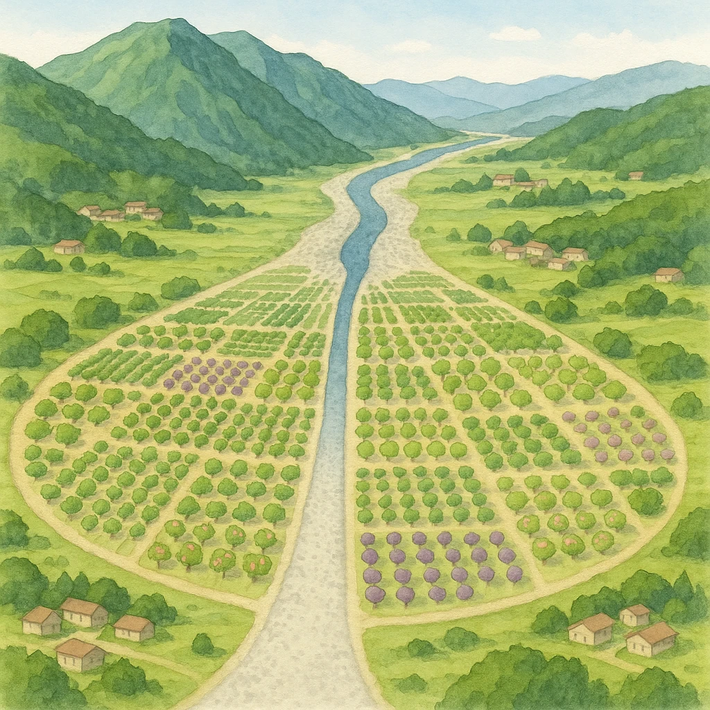

山 地
Ａ
砂や石が積もる
山地から平地へ出る所
Ｂ
Ｂ
平 地

Ⅲ-2
山から平地へ出る所
山から平地へ出る所に
できる
扇
⑴ 川が山地から平地へ流れ出る所にできた、傾斜のゆるい扇状の地形（図の
Ａ
）を
扇状地
という。
砂や石が積もっているので
水はけ
がよく、図の
Ｂ
のように
果樹
栽培に適している。
代表例＝
甲府盆地
（ぶどう・もも）
水が地下にしみこむので、
水田には向かない
テスト頻出
「山ぎわ＝
くだものの畑
」「河口＝
水田や市街地
」でセット暗記。
第11章 日本の地形・自然の特色
SEED EDUCATION